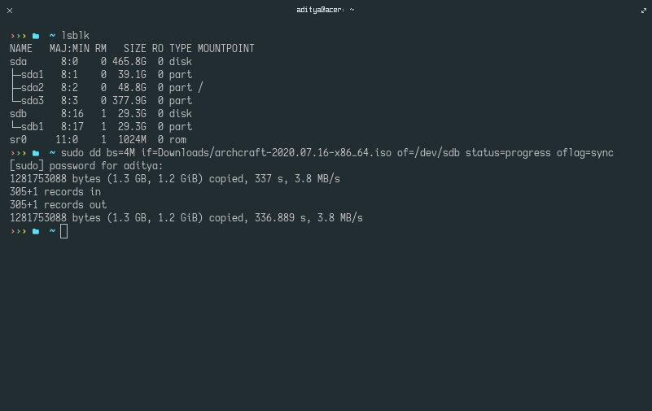

If you're already using a linux based OS, then you can create archcraft bootable usb with dd. dd creates both BIOS and UEFI bootable USB & this method is recommended due to its simplicity and universal availability.
Follow the steps below to create the bootable usb with dd -
lsblk to get the USB info. In my case, it's /dev/sdb.sudo dd bs=4M if=path/to/archcraft.iso of=/dev/sdX status=progress oflag=sync & enter your password.
Etcher is a OS image flasher built with node.js and Electron, capable of flashing an SDCard or USB drive. It protects you from accidentally writing to your hard-drives and ensures every byte of data was written correctly. Follow the steps below to create the bootable usb with Etcher -

cat path/to/archcraft.iso > /dev/sdx with root permissions.cp path/to/archcraft.iso /dev/sdx with root permissions.tee < path/to/archcraft.iso > /dev/sdx with root permissions.Rufus is a multi-purpose USB ISO writer. It provides a graphical user interface and does not care if the drive is properly formatted or not. Simply select the Archcraft ISO, the USB drive you want to create the bootable Archcraft onto and click START.
If the USB drive does not boot properly using the default ISO Image mode, DD Image mode should be used instead.